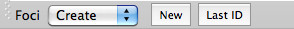

Foci creation
When Foci Mode
is activated, Create tools are selected by default and displayed at
the bottom of the Toolbar.

- Create Last ID - Create a focus at the location of the mouse click
- Delete - Delete a clicked focus
- Edit Properties - Edit the properties of a clicked focus
- Loaded foci files are NOT automatically
displayed. To turn Foci on before creating a new focus, toggle
on Display Foci in the Features
Toolbox Foci tab. Display of specific foci
can be selected in Foci:
Selection.
- There are 3 ways to identify a location
for focus creation:
- Left click on the surface or volume.
The coordinates for the location selected will populate the
Create Focus box.
- Click the New button and enter
XYZ coordinates.
- Click on the Last ID
button and the coordinates for the location last identified
in View mode will populate the Create Focus
box.
- If a new foci file is not created, newly
created foci will be added to a loaded foci file.
- Use the Add/Edit buttons to
select a Name, Color,
and Class
(optional) for the created focus.
A Name must be created for each focus, the color may be set
with the sliders, otherwise the default is black. The default
for Name and Class is the name/class one last used or '???'.
Creation of 2 or more foci with the same Name, Color, and
Class is allowed.
- The Project to Surface toggle
will project the focus at any location to the nearest location
on the surface being viewed.
- The finished focus will appear on the
surface/volume and the new focus name and class will show up
in the Features Toolbox Foci:Selection
tab.